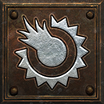
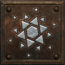
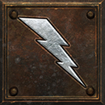
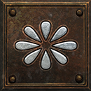
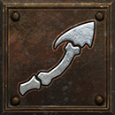
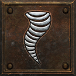
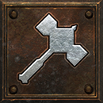
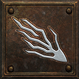
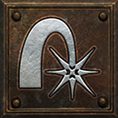

Choose the spell you want your Whirlwind to cast, then grow its blade.
Every class can use a school’s Whirlwind. It may cast the school’s spell on each hit; +skills do not raise that spell’s level.
Choose a spell and tier
Binding Blades by school and tier| School | First tier | Second tier | Final tier |
|---|
 EmberFire Ball | | | |
|---|
 RimeFrost Nova | | | |
|---|
 TempestLightning | | | |
|---|
 BlightPoison Nova | | | |
|---|
 MarrowBone Spear | | | |
|---|
 GaleTornado | | | |
|---|
 CensureBlessed Hammer | | | |
|---|
 MalisonMiasma Bolt | | | |
|---|
 GuileFire Blast | | | |
|---|
Whirlwind chance and spell level by tier
Whirlwind casts by tier| Tier | Chance per hit | Spell level |
|---|
| First tier | 20% | 14 |
|---|
| Second tier | 25% | 18 |
|---|
| Final tier | 30% | 20 / 22 / 24 |
|---|
| Perfect | 30% | 25 |
|---|
Find, climb or reroll
Find a blade at any tier, or Cube a lower-tier blade with its upgrade runes. Hell · chance per named blade.
- Monsters and championsWorld drops · Stone maps · the Descent
- 0.009259% (1 in 10,800)
- Unique monsters
- 0.008976% (1 in 11,141)
- Stone map and Descent unique packs
- 0.009036% (1 in 11,067)
Hell · chance per named blade
Hell · chance per named blade
Hell · chance per named blade
Climb its school
Keep the same spell school: Cube your blade with the upgrade runes shown in its card.
Reroll its school
Cube a blade with an Eye of Reckoning to roll its school again. Its tier stays the same; final-tier blades also reroll their spell level.